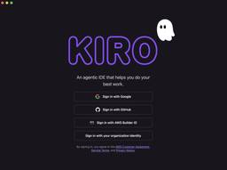
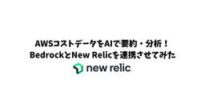
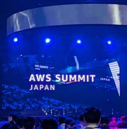
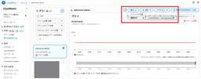
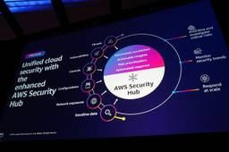
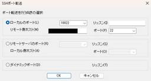
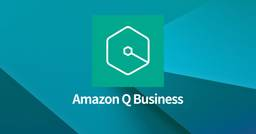
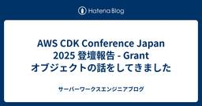

サーバーワークスエンジニアブログ
https://blog.serverworks.co.jp/
クラウド専業インテグレーター・サーバーワークスの中の人があらゆる技術についてお届けします。
フィード

AWS Systems Manager Parameter Store入門 AWS Secrets Managerとの違いから学ぶ活用法 1
1
サーバーワークスエンジニアブログ
AWSでアプリケーションを構築・運用する際、データベースの接続情報、APIキー、各種設定値などをどこで管理するかは、非常に重要な課題です。これらの情報をソースコードに直接書き込むこと（ハードコーディング）は、セキュリティやメンテナンス性の観点から避けるべきです。 この課題を解決するためにAWSが提供しているサービスとして、AWS Systems Manager Parameter Store（以下Parameter Store）とAWS Secrets Manager（以下Secrets Manager）があります。両サービスは機能的に似ている点も多く、「Parameter Storeの高性能…
1日前
UIから簡単にS3操作！AWSマネージドサービス AWS Transfer Family Web Apps 解説 1
サーバーワークスエンジニアブログ
こんにちは、近藤（りょう）です！ 今回は、フルマネージドでコード不要のウェブアプリケーションである AWS Transfer Family Web Apps を検証する機会がありましたので、その特徴と設定方法をご紹介します。 AWS Transfer Family Web Apps とは？ AWS Transfer Family Web Apps の特徴 ユーザビリティ・管理 ファイル転送機能 認証・認可 AWS Transfer Family Web Apps の制約 AWS Transfer Family Web Apps のコスト AWS Transfer Family Web Apps…
1日前
CDK Migrateで生成したコードを外部パラメータに対応させる
サーバーワークスエンジニアブログ
AWS CloudFormationからAWS CDKへの移行を成功させるために、外部パラメータの管理方法について詳しく解説します。
1日前
EventBridge Scheduler のスケジュールグループ機能の活用を考える
サーバーワークスエンジニアブログ
こんにちは😸 カスタマーサクセス部の山本です。 EventBridge Scheduler のスケジュールグループ機能 スケジュールグループごとの CloudWatch メトリクスの集計と監視 スケジュールの一括削除 環境名・システム名などのタグ付与 タグベースの権限付与（ABAC） まとめ 余談 EventBridge Scheduler のスケジュールグループ機能 EventBridge Scheduler にはグループ化の機能が存在しており、様々なスケジュールを分類して整理することが可能です。 利用開始時には default というグループが一つ存在しており、スケジュール作成時にはグルー…
2日前

Kiro（プレビュー版）によるはじめてのスペックコーディング 2
サーバーワークスエンジニアブログ
こんにちは。 アプリケーションサービス部、DevOps担当の兼安です。 今回は先日発表されたKiroとその特徴的な機能を使ってコーディングを試してみようと思います。 Kiroとは VibeとSpec Kiroのセットアップ Kiroのフックを使ってみる Kiroのスペックを使ってみる 要件の入力と要件定義書 設計フェーズへの移行と設計書 実装計画フェーズへの移行と実装計画書 実装の開始 Kiroのスペックを使った開発の感想 まとめ Kiroとは Kiroは2025年7月14日に発表されたAWS製のAI機能を備えたIDE（統合開発環境）です。 本資料作成時点（2025年7月16日）ではプレビュー…
3日前
CodeCommit から エラーコード 429 を受け取った原因と対策
サーバーワークスエンジニアブログ
こんにちは😸 カスタマーサクセス部の山本です。 前提 エラー 原因 対策 CodeBuild で実施可能な対策 まとめ おまけ 余談 前提 複数の CodeBuild プロジェクトが CodeCommit のリポジトリにあるソースコードを同時に クローンする構成があるとします。 エラー 私の検証では、CodeBuild プロジェクトを 7, 8 個同時に実行したあたりから、いくつかのプロジェクトで以下のようなエラーとなりました。 エラーは、CodeCommit からのクローンに失敗したという趣旨のものです。 git fetch failed with exit status 128: POST…
3日前
CDK MigrateでAWS CloudFormationから“差分ゼロ”移行を実現する方法
サーバーワークスエンジニアブログ
CDK Migrateを使用し、CloudFormationからAWS CDKへの移行時にメタデータを除去する方法を詳しく解説。既存のリソース差分をなくし、安心して移行作業を進める方法を紹介します。
3日前

【New Relic】AWSコストデータをAIで要約・分析！BedrockとNew Relicを連携させてみた
サーバーワークスエンジニアブログ
本記事では、AWS Lambda、Amazon Bedrockを活用し、New Relic上に作成したAWSのコストに関するダッシュボードを紹介します。日々のコスト実績や月末の予測コスト、コストが増加しているサービスやリージョンを自動で集計・可視化。さらに、Bedrockによる状況の要約や具体的なコスト削減案も提示し、Slackへ通知することで、「月末に請求額を見て焦る」ということがなくなります。
3日前

【AWS Summit Japan 2025】初参加！25新卒のサミット体験記
サーバーワークスエンジニアブログ
1. まずはコーヒーで一息 2. 印象に残ったブースを巡る 2.1 AWSを支えるハードウェア Nitro Card と Outposts 2.2 EKS Auto Mode：Kubernetes運用のさらなる自動化へ EKS Auto Modeの主なメリット・デメリット 2.3 あらゆる分野とAIの融合 スマート生産とAWS AWS Trainium、AIのためのハードウェア まとめ 皆さん、こんにちは！25卒新入社員のYiです。 先日開催されたAWS Summit Tokyo 2025に初めて参加してきました！ セッションやブースで学んだこと、感じたことをレポートにまとめました。 サミット…
4日前
AWS CDKでRDSのリストアを実装する時に注意するポイント
サーバーワークスエンジニアブログ
最近CDKデビューしたさとうです。 湿気で手がベタベタするので、この夏は湿気から逃れる避暑旅がしたいです🫠 それはともかく、AWS CDKのリストア運用に関するTipsをまとめてみました。 AWS CDK(Typescript、以下CDK)を前提としていること、ベストプラクティスに準拠した解説記事ではないことをご承知おきください。 CDKでRDSのリストアを実装するには？ サンプルコード 実装で注意するポイント ①: スナップショットのARNをリストア実行時以外に変更しない ②: リストア前後のRemovalPolicyを明示する ③: RDSに依存するリソースが存在する場合、Construc…
4日前
AWS 無料利用枠の概念が大きく変わりました 195
サーバーワークスエンジニアブログ
2025年7月15日に AWS Free Tier のアップグレードが行われ AWS 無料利用枠の概念が大きく変わりました。これまでと何が違うのか、新たに用意された AWS API がどのようなものなのかを確認した記事となります。
4日前
SimpleADを使用したWorkSpaces環境でファイル転送を有効化してみた
サーバーワークスエンジニアブログ
カスタマーサクセス部の北中です。 ローカルPCと WorkSpace 間でファイルを転送する方法はいくつかありますが、その中の1つであるファイル転送の有効化を試したので手順をまとめてみました。 前提 実施手順 管理ツールのインストール ログインユーザへの権限付与 グループポリシー管理用テンプレートファイルの取得 グループポリシー管理用テンプレートファイルの配置 管理用テンプレートファイルがインストールされていることを確認 ファイル転送の有効化 ファイル転送をやってみる ログインユーザから権限削除 まとめ 参考資料 前提 SimpleADおよびWorkSpacesの構築手順については記載していま…
4日前
【Kiro】はじめる前に知っておくべきこと ~データプライバシー＆セキュリティ編~ 29
サーバーワークスエンジニアブログ
KiroのAI開発環境を安全に使うためのデータプライバシーとセキュリティ対策を解説。AWS責任共有モデルや暗号化、サービス改善のためのデータ利用について詳述。
4日前

【小ネタ】CloudWatch Alarmからアラートになったログストリームを見つける
サーバーワークスエンジニアブログ
概要 はじめに 結論 付録 リソースの例 CLIコマンドでリソース作成 アラートを発生させる まとめ 概要 この記事では 「CloudWatch Alarmのアラーム状態画面から、該当ログストリームを効率的に見つける方法」について紹介します。 【本記事でわかること】 CloudWatch Alarm画面から該当ログストリームの特定方法 CloudWatch AlarmのAWS CLIでの作成方法 はじめに こんにちは！カスタマーサクセス部 CS1課の圡井です！ AWS上で運用しているアプリケーションのエラーをいち早く検出するために、 CloudWatch Logsにて特定のログが検出された際に…
4日前
Windows 11 pro に Terraform をインストールする @2025/7/15
サーバーワークスエンジニアブログ
こんにちは😸 カスタマーサクセス部の山本です。 Windows 11 pro に Terraform をインストールした際のメモです。 前提 ダウンロード 展開 AWS 認証情報の設定 AWS Provider を使用して東京リージョンに VPC を作成します。 参考リンク 余談 前提 「コンピュータのプロパティ」から以下を確認しました。 OS バージョンは Windows 11 pro CPU は AMD ダウンロード CPU は AMD なので、右側の AMD を選択します。 Install | Terraform | HashiCorp Developer 展開 解凍したフォルダを適当な…
4日前
Amazon Bedrock フローを触ってみよう
サーバーワークスエンジニアブログ
こんにちは！ カスタマーサクセス本部 CS4課 櫻庭です。 今回は、Bedrockフローについて紹介させて頂きます。 想定読者 Bedrockフローとは？ フローの作成 ノードの設定 動作確認 一つのインプットから複数のプロンプトを別々に処理し、後段のノードで統合するフロー 「プロンプト」以外のノード まとめ 想定読者 Bedrockフローを触ったことがない Bedrockフローを触ってみようとしたが、何ができるかよくわからない Bedrockフローとは？ 複数のプロセス（ノード）をビジュアル的に組み上げて、フローを作成することができます。 Bedrockエージェントでも、複数のタスクを実行さ…
4日前
AWS CloudFormationスタックをAWS CDKで管理！CDK Migrateを使ってみた
サーバーワークスエンジニアブログ
CDK Migrateを活用してCloudFormationからCDKへのスムーズな移行を実現。実際の移行手順とプロジェクト生成を詳しく解説します。
5日前

【AWS re:Inforce 2025】生まれ変わった新 Security Hub による検出と対応 (TDR309-NEW)
サーバーワークスエンジニアブログ
マネージドサービス部 佐竹です。AWS re:Inforce 2025 に現地参加してきましたので、そのログを順番に記述しています。本ブログは TDR309-NEW AWS Security Hub: Detect and respond to critical security issues のセッションレポートです。生まれ変わった新 Security Hub について述べています。
5日前

踏み台サーバーからポートフォワードして目的サーバーにアクセスするってどういう仕組み？
サーバーワークスエンジニアブログ
初めに 背景 結論 そもそもの話 まとめ 初めに こんにちは！ CS部CS2課の山﨑です！ ポートフォワードのSCP転送や、踏み台サーバーからのアクセスにについて、よくよく考えたら理解していないことに気づいたので、まとめてみます。 背景 先輩）：踏み台サーバーからプライベートサブネット内のサーバーにアクセスして、Linux にCloudWatch エージェントインストールして～（略） 山﨑）：承知です～。ポートフォワードするために、ローカルのポートに接続しよ～ なぜに、ローカルのポート？！？！ （いまさら） Tera Term SSH 転送設定 結論 結論から述べると画像の通りになりまして。 …
6日前

Amazon Q Business を触ってみる
サーバーワークスエンジニアブログ
こんにちは、やまぐちです。 Amazon Q Business とは？ さっそく触ってみる アプリケーションの作成 データソースの設定 チャット画面で操作 アプリを作成する 回答精度について まとめ Amazon Q Business とは？ AWS 上でも AI に関する様々なあり、整理するのもなかなか大変になってきたなと感じております。 その中でも、Amazon Q Business は、企業や組織が独自に持つ情報をデータソースとして、質問に回答したり、要約を作成したり、コンテンツを生成することができるサービスです。 例えば、社内文書、CRMデータ、営業資料、技術マニュアル、人事規定などの…
6日前
Amazon Q Business で日本語のデータソースだと上手く回答してくれない？
サーバーワークスエンジニアブログ
こんにちは、やまぐちです。 概要と結論 実際にやってみる 日本語のデータソースに設定した場合 労働時間について教えてください。 昇給はありますか。 通勤手当の上限額について教えてください。 英語のデータソースに設定した場合 労働時間について教えてください。 昇給はありますか。 通勤手当の上限額について教えてください。 まとめ 概要と結論 ※2025年7月時点の情報ですので、ご注意ください。 今回は、Amazon Q Business で設定するデータソースについて言及してみます。 結論から記載すると 2025年7月現在時点では、英語で記載された内容を含んだファイルをデータソースに設定するのがベ…
6日前
プロンプトを作るプロンプト？メタプロンプト活用術
サーバーワークスエンジニアブログ
こんにちは！サーバーワークスで生成AIの活用推進を担当している針生と申します。 今日は、「メタプロンプト」を活用したプロンプトエンジニアリングについて書きたいと思います。AIとの対話をもっと効果的にしたいと思っている方に向けて、実践的なテクニックをご紹介します。 メタプロンプトって何？ メタプロンプトとは、「プロンプトを作るためのプロンプト」のことです。つまり、AIに「こういうプロンプトを作って」とお願いするための指示文のことを指します。料理で例えるなら、レシピを作ってもらうためのリクエストのようなものですね。 なぜメタプロンプトを使うべきか？ AIツールを使っていて、こんな経験はありませんか…
6日前

AWS CDK Conference Japan 2025 登壇報告 - Grant オブジェクトの話をしてきました
サーバーワークスエンジニアブログ
AWS CDK Conference Japan 2025 の登壇レポートです。CDK のマイナークラス "Grant" について解説しました。
6日前

【AWS Summit Japan 2025 Day1】元インフラエンジニアから見たAWSとVMWareの最前線
サーバーワークスエンジニアブログ
AWS Summit レポート: VMware ワークロードのクラウド移行とモダナイゼーション サーバーワークス・スマートオペレーションズ クラウドセキュリティ部クラウドセキュリティ課の野上です。 先日開催された AWS Summit にて、VMware ワークロードの AWS 移行に関する二つのセッションを聴講しました。かつてインフラエンジニアとして VMware 環境に携わっていた私にとって、これらのセッションは、既存のオンプレミス環境とクラウドの融合、そして未来のモダナイゼーションの方向性を示す非常に興味深い内容でしたのでご紹介いたします。 AWS Summit hapan 2025 D…
8日前
【AWS Summit Japan 2025 Day1】プロアクティブセキュリティとAWS環境への侵入
サーバーワークスエンジニアブログ
AWS Summit レポート: プロアクティブセキュリティとAWS環境への侵入 サーバーワークス・スマートオペレーションズ クラウドセキュリティ部クラウドセキュリティ課の野上です。 先日開催された AWS Summit に参加してきましたので、その中でも特に興味深かったセッションについてご紹介したいと思います。 【デモで実演】侵入経路予測でプロアクティブなセキュリティを！ Day1の昼頃に開始されたこのセッション、事前の触れ込みは下記のようなものでした。 【AWS Summitのセッション情報より抜粋】 「脅威の動向から、実際に起こりうるAWS環境へのサイバーインシデントをデモンストレーショ…
8日前
インターネットに接続できない私（EC2）でも Terraform で構築したい
サーバーワークスエンジニアブログ
こんにちは、末廣です。 みなさん、普段どのようにして Terraform 環境を構成し、デプロイしているでしょうか？ developer.hashicorp.com 自分の PC、オフィスにある PC、開発用 EC2、tfaction、CodeBuild !? blog.serverworks.co.jp いずれの環境でも基本的にはアウトバウンドでインターネットに接続できる状態であるはずです。 では、インターネットに接続できないような環境で可能でしょうか？ 本ブログは terraform init ~ terraform apply をインターネットに接続できないオフラインの AWS 環境（E…
8日前
ACM 証明書のエクスポートできるようになったということで、あえて EC2 で稼働している Apache で HTTPS 設定してみる
サーバーワークスエンジニアブログ
こんにちは、末廣です。 アップデート紹介と IT 初心者に戻った気持ちブログです。 aws.amazon.com これまで ALB や CloudFront など、特定のサービスでしか利用できなかった ACM の無料パブリック証明書ですが、エクスポートして EC2 などのワークロード上で使えるようになりました。 AWS 公式ブログを参考に、せっかくなので EC2 で HTTPS の Web サーバ（Apache）を公開してみます。 今までは ALB を TLS の終端にして楽に設定してきたので、あえてレガシーな構成を作っていきます。 aws.amazon.com 証明書のエクスポートと準備 A…
8日前
AWS ALBとMicrosoft Entra IDによるOIDC認証の検証と実装
サーバーワークスエンジニアブログ
ALB と Entra ID で OIDC 認証を実装する 皆さんこんにちは、手嶋です。 今回は、AWS Application Load Balancer（ALB）と Microsoft Entra ID（旧 Azure AD）を使用して OIDC（OpenID Connect）認証を実装する手順について解説します。ALB の認証機能を活用することで、アプリケーション側で認証処理を実装することなく、ロードバランサーレベルで認証を行うことができます。 なぜ ALB + Entra ID による OIDC 認証なのか 技術的背景 従来の Web アプリケーション認証では、各アプリケーション内で認…
9日前